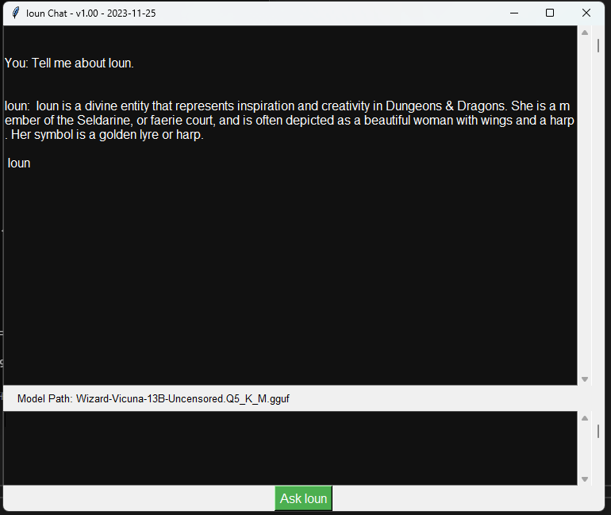

Objective Three
Demonstrate the skills required to design and create machine learning systems using best practices and patterns.
-
Cauldron
An all-in-one app for Dungeons & Dragons
 Click to learn how this amazing innovation project meets this objective.
Click to learn how this amazing innovation project meets this objective.
-
Ioun: The Goddess of Knowledge Chatbot
The Ioun Chatbot incorporates machine learning principles through its interaction model. It uses a pre-trained language model (LLAMA) to generate responses based on user input. The system showcases the design and implementation of a conversational agent, leveraging best practices in natural language processing. The agent's responses are generated dynamically, demonstrating the integration of a machine learning system within the chatbot. The utilization of tokenization, detokenization, and response generation adheres to established patterns in machine learning application development. The chatbot's structure reflects an understanding of machine learning design principles, contributing to the achievement of objective 3.
